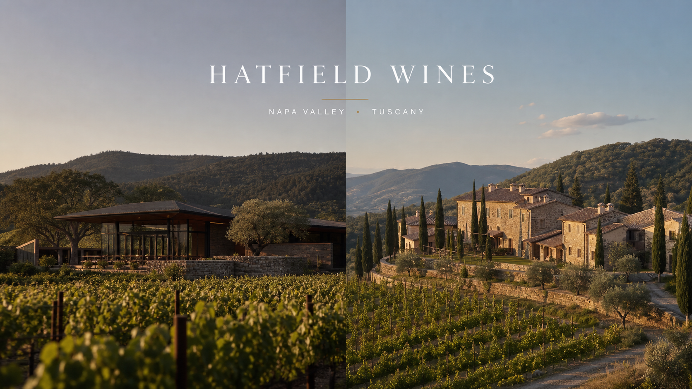

Hatfield Wines
6 roomsSt Helena area
California, USA · Napa estate suites

Napa and Chianti Classico each keep their own agricultural logic, winemaking authority and hospitality rhythm.
California, USA · Napa estate suites
Tuscany, Italy · Chianti Classico estate suites